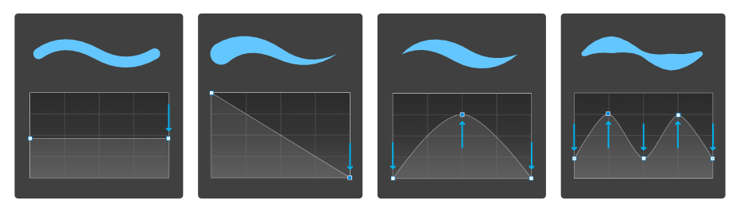
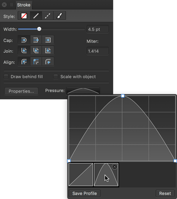

Affinity Designer offers complete flexibility when using pen tablets or Force Touch-enabled devices for real pressure-sensitive drawing and painting. If you prefer a mouse or trackpad (not Force Touch), Affinity Designer offers simulated pressure sensitivity.
Affinity Designer offers complete flexibility when using pen tablets for real pressure-sensitive drawing and painting. If you prefer a mouse, Affinity Designer offers simulated pressure sensitivity.
Whether you're using vector-based Pen, Pencil or Brush tools, or pixel-based Brush or Retouch tools, you can simply connect your device and you're ready to go.
For mouse users, Affinity Designer lets your mouse become velocity sensitive by default. The same brush tools can be used but with simulated pressure sensitivity based on the speed (velocity) of your mouse movements.
This automatic response is governed by the brush controller which is set to automatic by default—it senses the type of input device and varies brush size, flow, etc. as you paint according to a particular input: 'Pressure', 'Velocity', 'Brush Defaults', or 'None'. If set to 'None', the brush is always a fixed size, flow setting, etc. Otherwise, the brush stroke properties will vary from a minimum to maximum amount (e.g. the full brush width).
While you get the response you need from either input, you'll still be able to fine-tune brush settings for pressure/velocity.
If you want to create a custom pressure profile that can be applied to a previously drawn stroke, you can design it and apply it from the Stroke panel. This can be optionally saved as is, or modified before saving.

